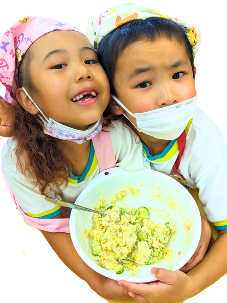
園の畑から食卓へ
季節の野菜をみんなで収穫し、そのまま給食やクッキング保育で味わいます。命の大切さ、食べ物のありがたさを体験から学びます。
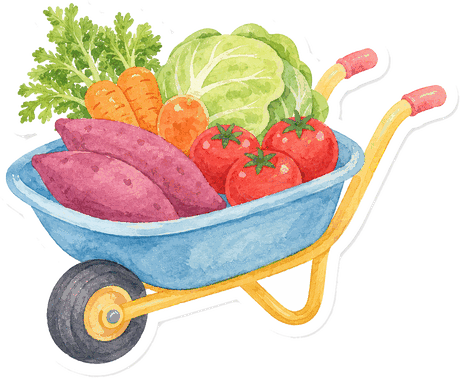
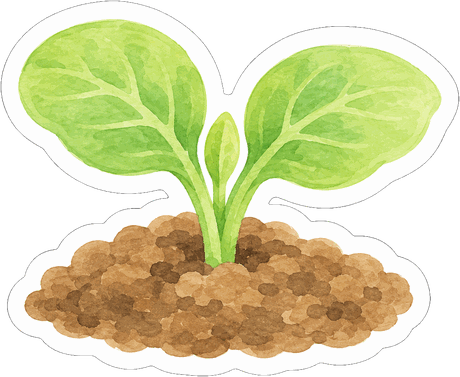
Food & Health
育てて、収穫して、食べる。自分の手で育てたものを口にする体験が、 命の大切さと食べ物へのありがたさを教えてくれます。
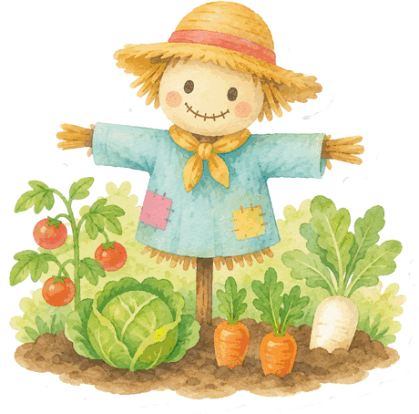
園の畑は、子どもたちにとって一番わかりやすい「食の教室」です。

季節の野菜をみんなで収穫し、そのまま給食やクッキング保育で味わいます。命の大切さ、食べ物のありがたさを体験から学びます。
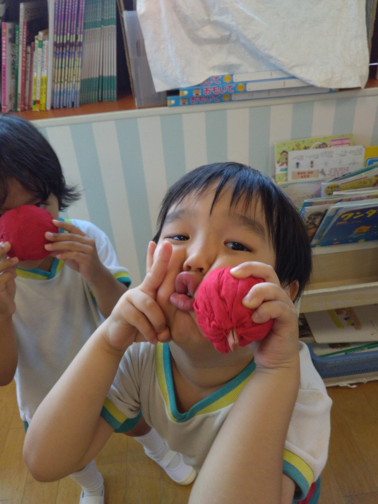
栄養士による定期的な講話で、体のしくみや栄養素、よく噛むことの大切さを、子どもたちにわかる言葉で伝えています。
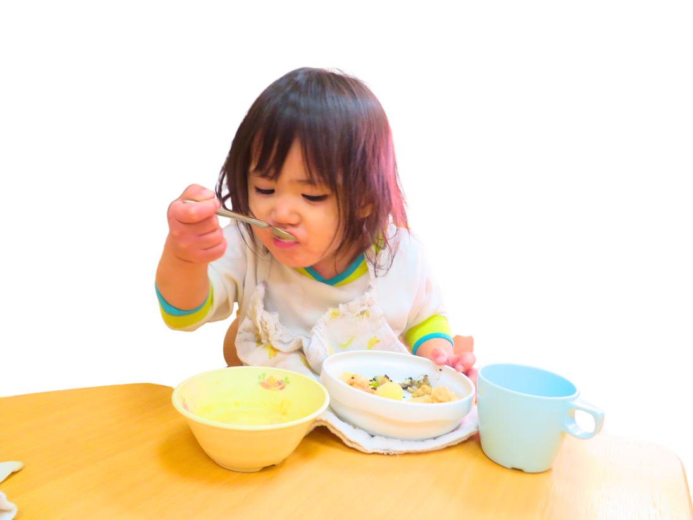
スプーンからお箸へ、エジソン箸や年齢別のサイズ調整で段階的に移行。「三角食べ」などのマナーも楽しく身につけます。
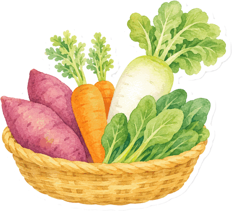
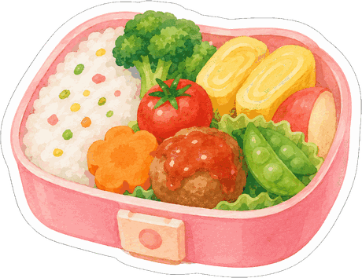
季節感のある行事食と、野菜をたっぷり使った園独自の献立を毎月作成しています。
鳥取の白バラ牛乳や、地元貝塚市の精肉店・青果店の食材など、信頼できる食材を選んで使っています。
毎日のおやつも離乳食も、園の調理室での手作り。できたてのおいしさを子どもたちに届けます。
全保育室に除去率99.99%以上の空気清浄機を設置。給食室の浄水器はミルクの調製にも使用しています。
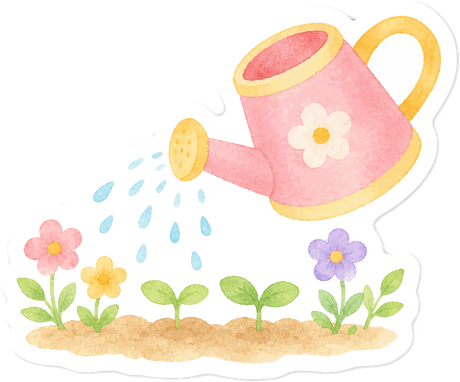
園とご家庭が連携しながら、お子さま一人ひとりの成長に合わせた食事を提供します。 13か月頃を目安に、様子を見ながら無理なく幼児食へ移行していきます。
食事のことを相談する医師の診断による食物アレルギーには、除去食・代替食で対応します。 医師記入の「アレルギー疾患生活管理指導表」をご提出いただき、調理担当との面談のうえ進めますので、 まずはお気軽にご相談ください。
園に相談する行事のたびに、その季節ならではの味を楽しみます。
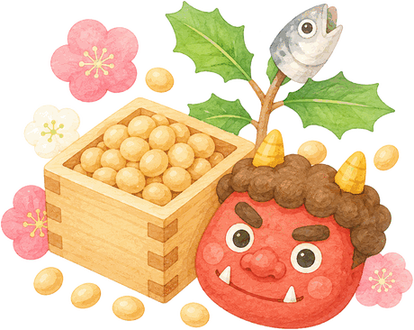
節分恵方巻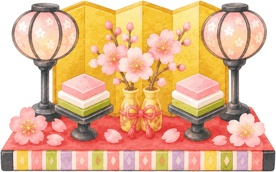
ひなまつりちらし寿司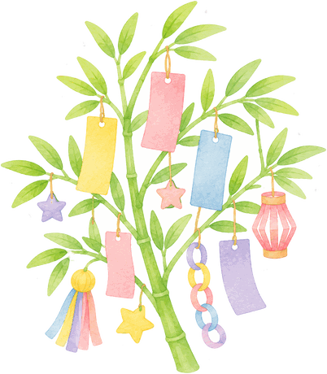
七夕そうめん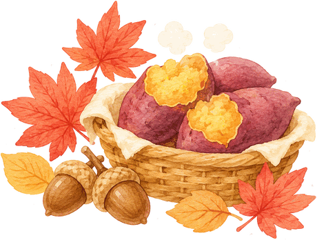
秋の収穫芋掘りクッキング